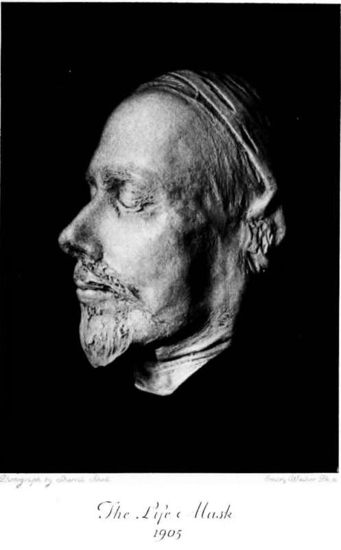

Chapter XVI. The Closing Years
Description
This section is from the book "The Life Of Francis Thompson", by Everard Meynell. Also available from Amazon: The life of Francis Thompson.
Chapter XVI. The Closing Years
As F.T. grew busier with journalism, and was helped to bread by it, he grew peevish with his prose, as other men do with a servant:-
" Prose is clay ; poetry the white, molten metal It is plastic, not merely to gross touch, but to the lightest breath, a wish, a half-talent, an unconscious feather-passage of emotional suggestion. The most instantaneously perfect of all media for expression. Instant and easy as the snap of a camera, perfect as star in pool to star above, natural as breathing of sweet air, or drinking of rain-fresh odours ; where prose asks a certain effort and conscious shaping. But prose can be put in shafts (to its slow spoiling); verse, alack! hears no man's bidding, but serves when it lists,-even when it consents to lay aside its wings."
" Poetry simple or synthetic ; prose analytic."
"It might almost be erected into a rule that a great poet is, if he pleases, also a master of prose," he writes in one of several studies of "The Prose of Poets"- including Sir Philip Sidney's, Shakespeare's, Ben Jon-son's, and Goldsmith's, first published in the Academy.
Money Matters
At times the every-day difficulties of journalism seemed insurmountable. Then would he write desperately to W. M. of the necessity for cowardice on his part and a return to a mode of life that had no responsibilities :-
"Things have become impossible. B_____-did not outright refuse me an advance on my poem, but told me to call again and talk it over.' . . . The only thing is for me to relieve you of my burthen-at any rate for the present-and go back whence I came. There will be no danger in my present time of life and outworn strength that I should share poor Coventry's complaint (that of outliving his ambition to live). . . . For the reverse of the medal, you have Ghosh who has just been promised ^220 odd for a series of tales.
"... For the present, at any rate, good-bye, you dearest ones. If for longer-
Why, then, this parting was well made.
-Yours ever and whatever comes,
Francis Thompson."
During the years when such despairs were common W. M.'s favours were forced upon a spasmodically reluctant poet, whose earnings seemed never at best to leave him a margin for incidental expenses :-
"To have to talk of money-matters to you is itself a misery, a sordidness. How much worse in its way all this must press on you is comprehensible to anyone. We are no longer as we were ten years ago. You have grown-up children to launch in life. . . ."
For W. M. there was never a doubt of the honour and pleasure of his position. If Francis's rent fell sometimes in arrears, it was not because there was any falling-away in willingness, but because it had taken its place among the many liabilities of the master of a large household, and had to wait among them for its turn to be met.
After a desperate letter foretelling the end, a little conversation with my father would correct his despair, and he could return to his landlady with the most obvious remedy, or some suggestion equally efficacious :-
" You are right. Mrs. Maries has given way, on the understanding that you will make some arrangement with her before the end of the month."
Again, to W. M.:-
". . . As for poetry, I am despondent when I am without a poetical fit, yet when I have one I am miserable on account of my prose. I came lately across a letter of Keats' (penned in the pras-Endymion days), which might almost word for word be written by myself about myself. It expresses exactly one of the things which trouble me, and make me sometimes despair of my career. ' I find' (he says) ' I find I cannot do without poetry-without eternal poetry; half the day will not do-the whole of it. I began with a little, but habit has made me a leviathan. I had become all in a tremble from not having written anything of late : the sonnet over-leaf did me good ; I slept the better last night for it: this morning, however, I am nearly as bad again.' I, too, have been ' all in a tremble' because I had written nothing of late. I am constantly expecting to wake up some morning and find that my Daemon has abandoned me. I hardly think I could be very vain of my literary gift; for I so keenly feel that it is beyond my power to command, and may at any moment be taken from me."
This nervousness for his muse, like to Rossetti's for his sight, came upon him more hardly in later years.
Misrepresentation-it is easy to trace its origin-was busy before his death. The word went round that the streets had put a worse slur than hunger, nakedness, and loneliness upon him. In 1906 a pamphlet reached him from the University Press, Notre Dame, Indiana, in which he read that he "had been raised out of the depths ":
" No optimism of intent can overlook the fact of his having fallen, and no euphemism of expression need endeavour to cloak it. Down those few terrible years he let himself go with the winds of fancy, and threw himself on the swelling wave of every passion, desiring only to live to the full with a purpose of mind apparently like that of his contemporary, Oscar Wilde, but in circumstances now vastly different from those the brilliant young Oxford dandy knew. He said, ' I will eat of all the fruits in the Garden of Life,' and in the very satisfaction of his desire found its insatiableness."
With gossip turning the pages, that reader found the proof of Thompson's wrong-doing in "The Hound of Heaven."
I fled Him down the nights and down the days, could only mean that the runaway was a criminal, and the Almighty the policeman who hurries when he is sure of a crime. " The Hound of Heaven," a study in the profound science of renunciation, was said to be the work of a man who had " thrown himself on the swelling wave of every passion." It mattered nothing that in the poem we read only that the poet had " clung to the whistling mane of every wind," had turned to children "very wistfully," had "troubled the gold gateway of the stars." There is really nothing in it to support the blacker theory. A better way to understand the poetry and know the poet is to believe the poet and the poetry. This pamphleteer and the writer of the obituary notice in the Times were strangers, their knowledge was based on hearsay. In face of such misunderstanding, at the time of his death it was hardly surprising to read in the Mercure de France that " he went mad, and death happily put an end to his miseries."
Continue to: